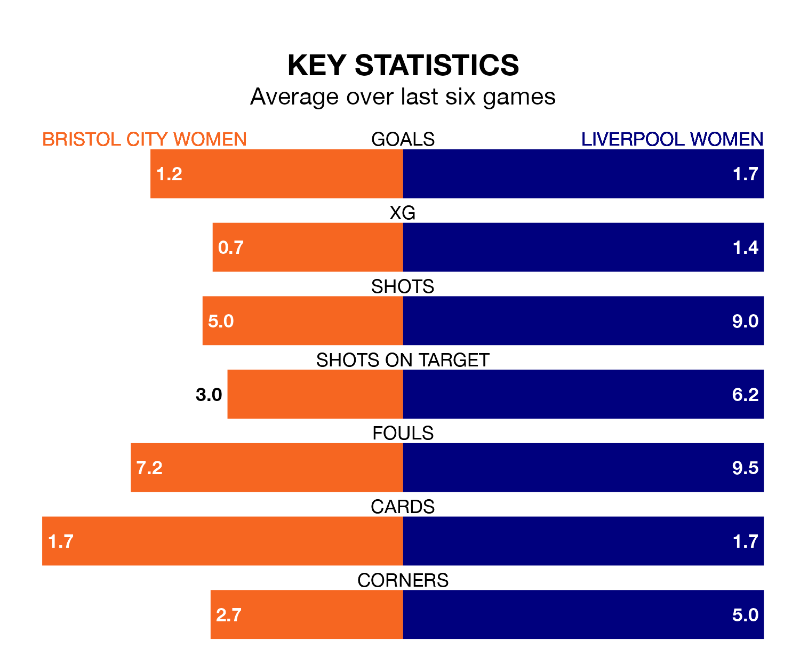

Liverpool Women are strong favourites to take all three points despite Bristol City Women's home advantage in Saturday lunchtime's match at Robins High Performance Centre.
*Betting Company* are offering odds of 1.49 on Liverpool sealing the win, with the visitors sitting fifth in the FA Women's Super League table.
Bristol City, who are 12th in the league and 23 points behind Liverpool, are priced at 5.46 to win. A draw is set at 4.45.
Bristol City are in terrible form in the FA Women's Super League, with no wins and a draw from their last six games.
With three wins and two draws over that period, Liverpool's form is much better – they have taken 11 points from 18, compared to the Robins' one.
In the last 10 years, Bristol City and Liverpool have played each other on 16 occasions. Bristol City won two of them, Liverpool 10, and they drew four times.
On average, the Robins scored 0.9 goals and Liverpool 2.1 in those matches.
Their last meeting was on January 14, when Liverpool won 1-0 away.
With 20 goals in 18 games so far this season, the home team are the league's third-lowest scorers with 1.1 goals per game. And they are conceding more than average, letting in 53 goals at a rate of 2.9 per game.
The visitors are also below average scorers, with 1.4 goals per game, compared to a league average of 1.7. They have also conceded 1.4 goals per game.
Bristol City's last match was on Sunday, a 5-0 loss against Arsenal Women.
Liverpool lost 4-1 against Manchester City Women last time out, on March 30, with Khiara Keating on the scoresheet.
Updated: 15:40 (UTC), 18/04/24